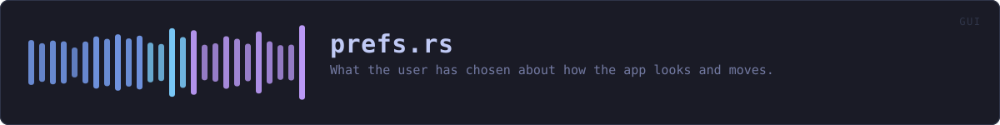

crates/veilvoice-gui/src/prefs.rs
veilvoice-gui · 439 lines · read the source
What the user has chosen about how the app looks and moves.
Nothing here is secret, and nothing here is required
Preferences are a convenience. Every field has a working default, a missing file is not an error, and a corrupt one is not either -- it falls back to the defaults and says so in the settings panel rather than refusing to start. An app that will not open because its preferences file has a stray byte in it has turned a cosmetic setting into an outage.
This is deliberately not written through veilvoice_crypto::privatefile. That module exists for files whose contents are sensitive, and using it here would blur a distinction worth keeping: your choice of colour scheme is not a secret, and treating it like one would make the real protections look like decoration.
The format
One key = value per line, ASCII, with # comments -- readable and editable with any text editor, for the same reason the integrity manifest is a text format. No parser dependency, and no way for a malformed file to do anything more interesting than be ignored.
Animations
On by default, and switchable off in two places: the settings panel, and the VEILVOICE_NO_ANIMATION environment variable, which wins over the file so that a machine which struggles with them can be fixed without opening the UI that is struggling.
The system's own "reduce motion" setting is honoured above both. Someone who has told their operating system they do not want movement has already answered this question, and a privacy tool asking again -- and defaulting to yes -- would be ignoring them.
WHAT THIS FILE CONTAINS
439 lines defining 9 functions (7 public), 2 types and 0 constants. Everything below is read out of the source, so it cannot disagree with the code.
The types it owns.
struct Prefsline 41 — Everything the user can choose about presentation.struct Motionline 242 — Whether movement is allowed, and how much.
What happens when it runs. These are the ways in: public, and nothing else in this file calls them, so they are what an outside caller reaches first.
default_pathline 98 — Where preferences live: beside the app lock, in this platform's config directory.Prefs::loadline 109 — Read preferences from path.
reachesdefault,parse,parse_boolPrefs::saveline 214 — Write preferences to path, creating the directory if needed.
reachesto_textMotion::resolveline 254 — Resolve for this frame.Motion::secsline 272 — A duration scaled by whether motion is allowed.
WHAT CALLS WHAT
The functions this file defines, and the calls between them. An edge means the callee's name appears, called, inside the caller's body — a syntactic reading, not a type-resolved one.
The same graph as Mermaid source
%%{init: {"theme":"base","themeVariables":{"background":"#1a1b26","primaryColor":"#1f2335","primaryTextColor":"#c0caf5","primaryBorderColor":"#7aa2f7","secondaryColor":"#16161e","tertiaryColor":"#16161e","lineColor":"#737aa2","textColor":"#c0caf5","mainBkg":"#1f2335","nodeBorder":"#7aa2f7","clusterBkg":"#16161e","clusterBorder":"#2f3549","fontFamily":"ui-monospace, SFMono-Regular, Consolas, monospace","fontSize":"14px"}}}%%
flowchart TD
n_default["Prefs::default<br/>line 79"]
n_default_path(["default_path<br/>line 98"])
n_load(["Prefs::load<br/>line 109"])
n_parse["Prefs::parse<br/>line 122"]
n_to_text["Prefs::to_text<br/>line 195"]
n_save(["Prefs::save<br/>line 214"])
n_parse_bool["parse_bool<br/>line 224"]
n_resolve(["Motion::resolve<br/>line 254"])
n_secs(["Motion::secs<br/>line 272"])
n_load --> n_default
n_load --> n_parse
n_parse --> n_default
n_parse --> n_parse_bool
n_save --> n_to_text
click n_default href "https://github.com/tilas01/veilvoice/blob/main/crates/veilvoice-gui/src/prefs.rs#L79" "open the source"
click n_default_path href "https://github.com/tilas01/veilvoice/blob/main/crates/veilvoice-gui/src/prefs.rs#L98" "open the source"
click n_load href "https://github.com/tilas01/veilvoice/blob/main/crates/veilvoice-gui/src/prefs.rs#L109" "open the source"
click n_parse href "https://github.com/tilas01/veilvoice/blob/main/crates/veilvoice-gui/src/prefs.rs#L122" "open the source"
click n_to_text href "https://github.com/tilas01/veilvoice/blob/main/crates/veilvoice-gui/src/prefs.rs#L195" "open the source"
click n_save href "https://github.com/tilas01/veilvoice/blob/main/crates/veilvoice-gui/src/prefs.rs#L214" "open the source"
click n_parse_bool href "https://github.com/tilas01/veilvoice/blob/main/crates/veilvoice-gui/src/prefs.rs#L224" "open the source"
click n_resolve href "https://github.com/tilas01/veilvoice/blob/main/crates/veilvoice-gui/src/prefs.rs#L254" "open the source"
click n_secs href "https://github.com/tilas01/veilvoice/blob/main/crates/veilvoice-gui/src/prefs.rs#L272" "open the source"
classDef entry fill:#1f2335,stroke:#7aa2f7,color:#c0caf5
class n_default_path,n_load,n_save,n_resolve,n_secs entry
classDef api fill:#1f2335,stroke:#7dcfff,color:#c0caf5
class n_parse,n_to_text api
classDef helper fill:#1f2335,stroke:#bb9af7,color:#c0caf5
class n_default,n_parse_bool helperThis site loads no third-party script, so it cannot run Mermaid; the diagram above is the same nodes and edges drawn by the generator instead. GitHub renders the source below directly.
ITEMS
| Item | Line | Documentation |
|---|---|---|
Prefs pub struct | 41 | Everything the user can choose about presentation. |
Prefs::default fn | 79 | |
default_path pub fn | 98 | Where preferences live: beside the app lock, in this platform's config directory. |
Prefs::load pub fn | 109 | Read preferences from path. |
Prefs::parse pub fn | 122 | Parse the key = value format. |
Prefs::to_text pub fn | 195 | Serialise to the text format. |
Prefs::save pub fn | 214 | Write preferences to path, creating the directory if needed. |
parse_bool fn | 224 | |
Motion pub struct | 242 | Whether movement is allowed, and how much. |
Motion::resolve pub fn | 254 | Resolve for this frame. |
Motion::secs pub fn | 272 | A duration scaled by whether motion is allowed. |